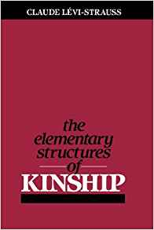

augmenting objects
augmenting objects
homework review
what did you do?
and why?
gestalt
the whole is more than the sum of its parts
artefacts
first thoughts about 'Artefacts and the meaning of things' ?
artefacts are: types of food / mountains (if given a divine purpose)
customization: is one way of classification
places where we order things:
- online
- personal space
- navigation/public space
- text > information science
- fashion (organizing your wardrobe)
museums
bicentennial (whitney museum)
MoMA > donation > rich people happy
MAD >
Cooper Hewitt >
objects and things
let's take 2min and write about the object you have with you care most about:
- what is its history?
- how does it relate to you?
- how do others relate to that object? to a similar object?
how do objects create meaning?
1. through ordering
2. through being ordered
3. through their features
4. through
ordering
structuralism is the idea that all things, people and relationships happen within one overarching structure, a cultural project.
aka the universal law of why we do what we do, and what others do what they do.

-ism
structures:
- religion
- legality / bureaucracy
- spiritual vs. functional
- governed by our humanity/physicality
-
being ordered
since the 20th century, western thinkers have explored the possibility of us being ordered, watched, classified in specific ways.
in the 21st century, the shift has been towards "adjustment" rather than "categorization"
languages:
- untranslatable emotions (sonder)
geography:
- mountains/coast
- island
- soil
social media:
- databases
detergent
razor
beers
alienation
left out / usability (?)
we don't know who made the object / when / where
materiality
is an object defined by its appearance?
or by its function?
or would some say it is a trick question?
time
1. long (symbolizing heritage)
2. just right (symbolizing identity)
3. short (symbolizing freedom)
menorah
clothes
boots cowboy
books
syntax and context
clothes (sari)
boots cowboy
books
meaning > how do they become meaningful
features
features include time, but also...
how it was made (technology vs. craft)
what it was made for?
(being pretty or being functional)
made it to last
who was it made for (accessibility)
what is it made of
why was it made
where was it made?
displaying the invisible
what is the nature of the relationship between people and things?
the ultimate display
"There is no reason why the objects displayed by a computer have to follow the ordinary rules of physical reality with which we are familiar."
ivan sutherland
a looking glass into a mathematical wonderland
cobol
augmented reality
augmented reality depends on:
- objects
- spaces
in order to add new, digital objects in relationship to the above
UI being foreign
WIMP (windows, icons, etc.)
augmented displays
consistent illusion
augmented tracking
the biggest problem is to recognize the space around us.
mechanical / ultrasonic / radio / gps / intertial / optical
augmented interfaces
how does UI relate to physical objects?
how do we come up with a new metaphor?
augmented framework
works with motion sensors, a single camera, and artificial intelligence
any iOS 11+ (iPhone 6+, iPad Pro)
tracks planes, images (2D), objects (3D) and light
augmented applications
what kind of applications did you find interesting?
personal assistance
navigation
workplace (office, industry, medicine)
military
education
break
unity - review
unity - creating objects
1. import the object we want
2. react to the user input
3. instantiate the gameobject in the scene
unity - importing
to import an object, drag and drop it in the asset panel
or click Assets > Import New Asset...
you can have any kind of image and any kind of audio
unity - reacting to the user input
IF a thing happens THEN do some stuff
if(Input.GetMouseDown(0)) { Debug.Log("clicked") }
unity - instantiating a game object
we first need a public variable where we can store our game object
the we call the function GameObject.Instantiate()
(and we need to specifiy the position and rotation of where we want to create that object)
unity - exercise
find two 3D models online
when the user does a right-click, instantiate one of those objects
when the user does a left-click, instantiate the other object
bonus: when the user presses the keyboard, instantiate a random one
unity - creating an app!
unity > xcode > your phone
log into to an iCloud account to access your developer profile and sign your app
homework
create an app that allows us to place objects in the space (at least 8)
pay close attention to how those object relate to each other:
what kind of set/personality do they represent?
what are you trying to say by choosing